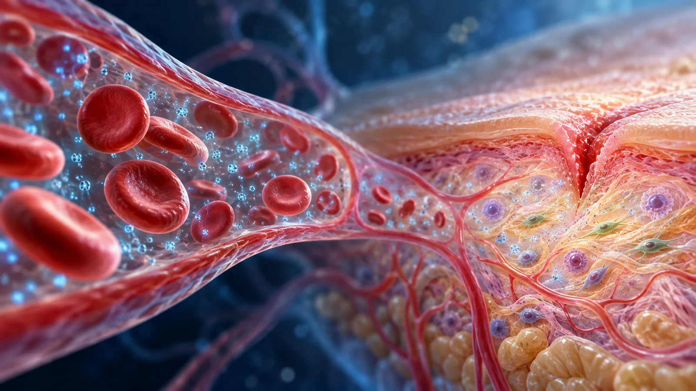

Oxygen carried through plasma
Under pressure, more oxygen dissolves directly into blood plasma. That physical effect helps explain why hyperbaric oxygen therapy has a place in care for selected difficult wounds. The Geode trial is still a plan. It proposes measuring oxygen delivery and comfort; wound-healing outcomes would depend on the future study group and protocol.
Oxygen physiology and selected wound uses A separate, completed wound-healing trial